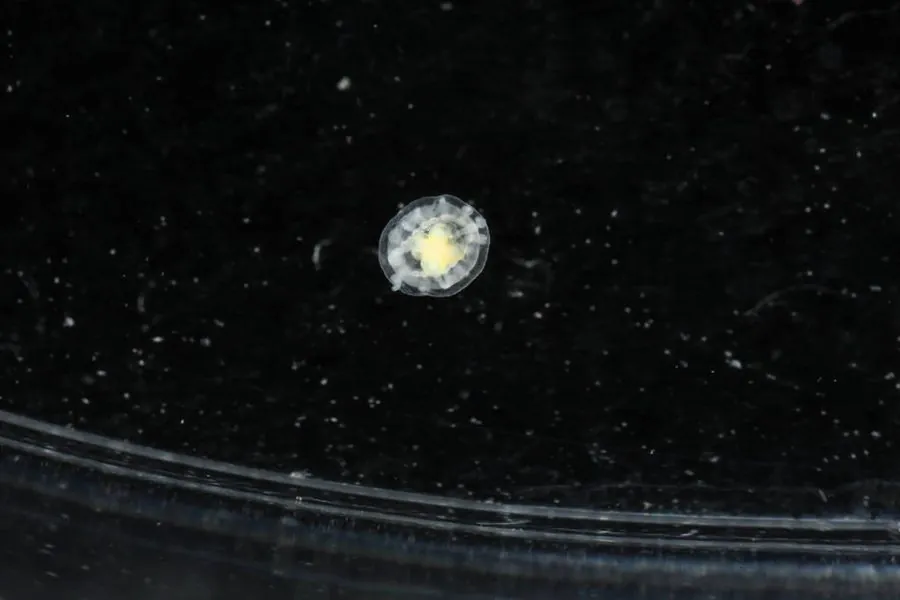

其他无脊椎动物 · 动物界
灯塔水母 Turritopsis dohrnii

被认为能返老还童的小型水母，生命周期中可以由成年体逆转为水螅体，理论上具备无限循环的生存潜力。
- 分类
- 门刺胞动物门纲水螅纲目花水母目科海神水母科属灯塔水母属
- 栖息环境
- 温带和热带浅海，附着在岩石、海藻等硬质表面
- 地理分布
- 地中海、日本附近海域及全球温带热带浅海
- 保护级别
- 暂无评估
物种志
灯塔水母的伞体很小，直径只有约 4–5 mm，呈钟形或灯泡形，半透明，伞缘有一圈细小的触手，胃部呈鲜红色或橙红色，在深色背景下看起来像一盏小灯。
它生活在温带和热带海域的浅海，附着在岩石、海藻和其他生物表面，以小型浮游动物为食。灯塔水母最出名的是它的生活史：在环境压力或受伤时，成年水母体可以逆转发育，重新变成水螅体，之后再通过出芽产生新的水母体，这个过程被称为返老还童。理论上这种循环可以反复进行，因此被称为永生水母，但它仍会被捕食和疾病杀死，并非真正不死。它是研究细胞重编程和衰老的重要材料，体型虽小，却在海洋中广泛分布。
形态与习性
- 食性捕食小型浮游动物
- 伞径约 4–5 mm
- 特征伞体半透明，胃部呈鲜红色
- 返老还童成年体可逆转为水螅体，再产生新水母
- 寿命理论上可反复循环，但会被捕食和疾病杀死
- 科研研究细胞重编程和衰老的重要材料
趣味知识
- 灯塔水母在受伤或环境恶化时，能逆转发育变回水螅体。
- 它的胃部呈鲜红色，在深色背景下像一盏小灯。
- 所谓永生只是理论上能循环，它们仍会被捕食和疾病杀死。